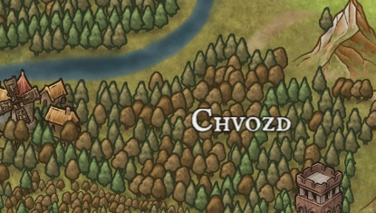

☰
Chvozd
Chvozd. Divoký, nespoutaný. Chvozd je vše, co si člověk představí pod nezkroucenou přírodou. Jen vkročit do něj je pro odvážné, protože po pár metrech člověk přes koruny stromů nevidí svit slunce. V Chvozdu žije spoustu zvířat a spousta z nich je větší než obyčejná zvířata, která potkáte běžně. Běžný vlk vás může převýšit a to nejen v kohoutku! Aspoň tak to říkají Ječínští, kteří na okraji Chvozdu bydlí.
Dobrodružství, která se zde odehrála:

Chvozd na mapě